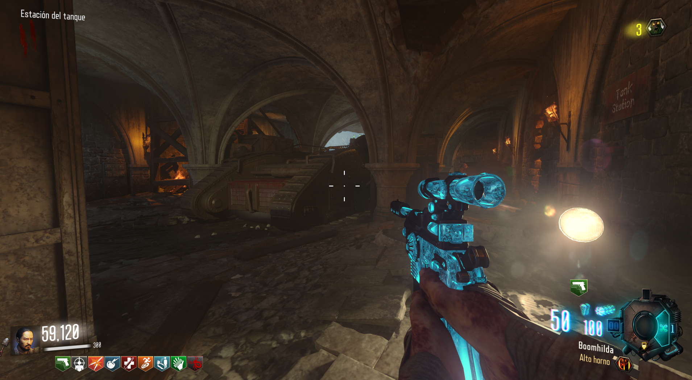
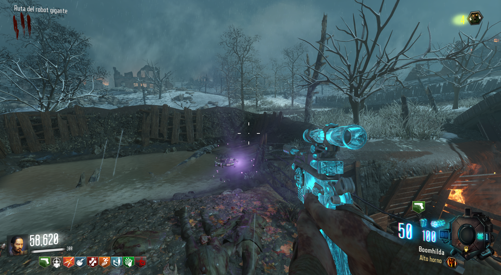
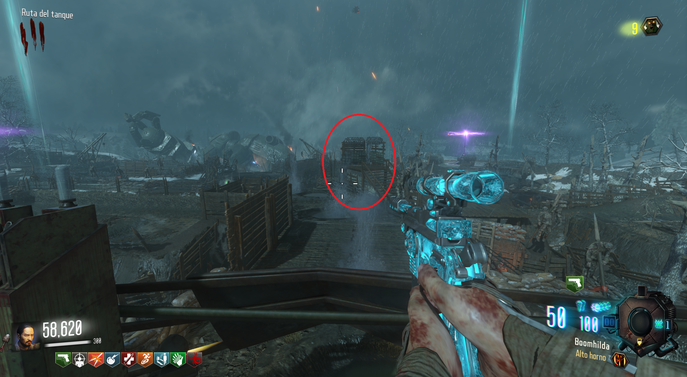
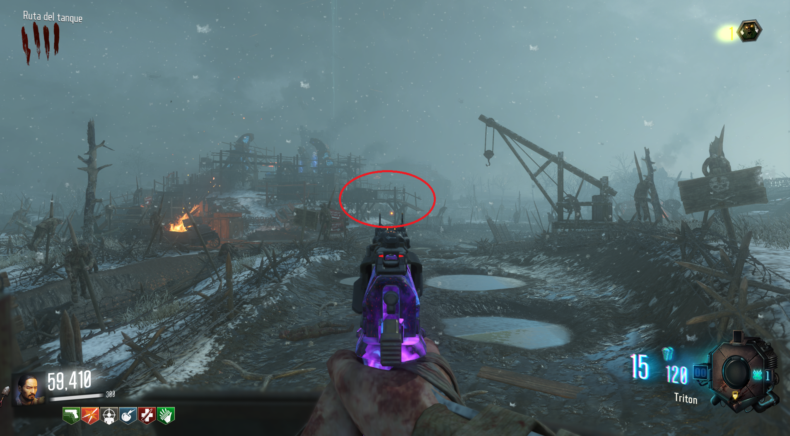
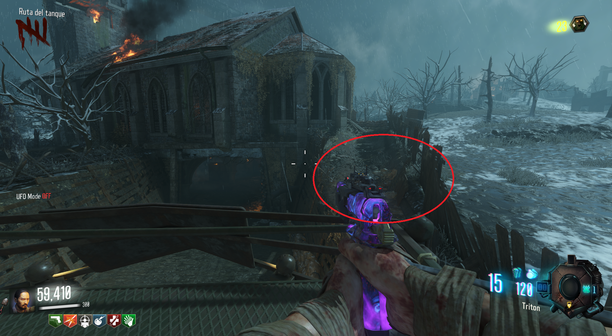
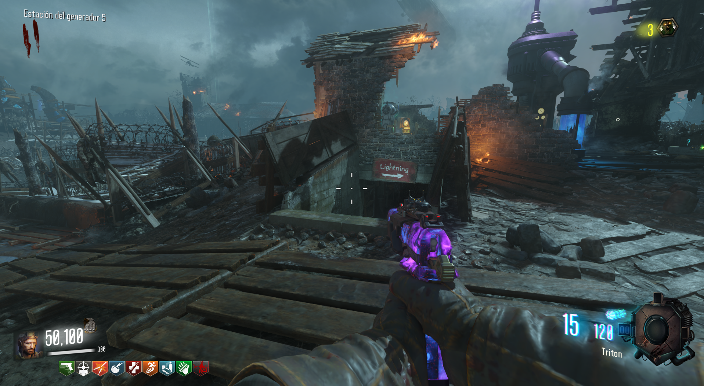
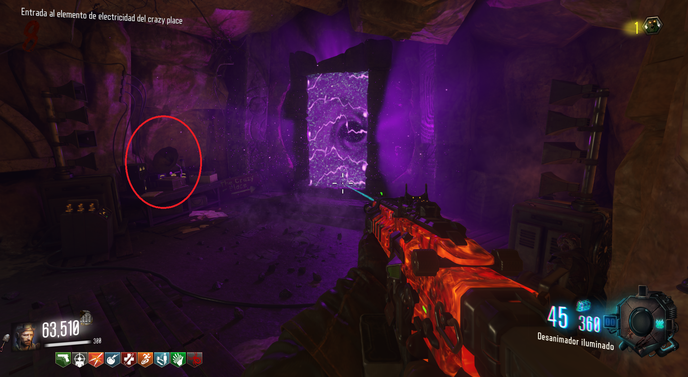
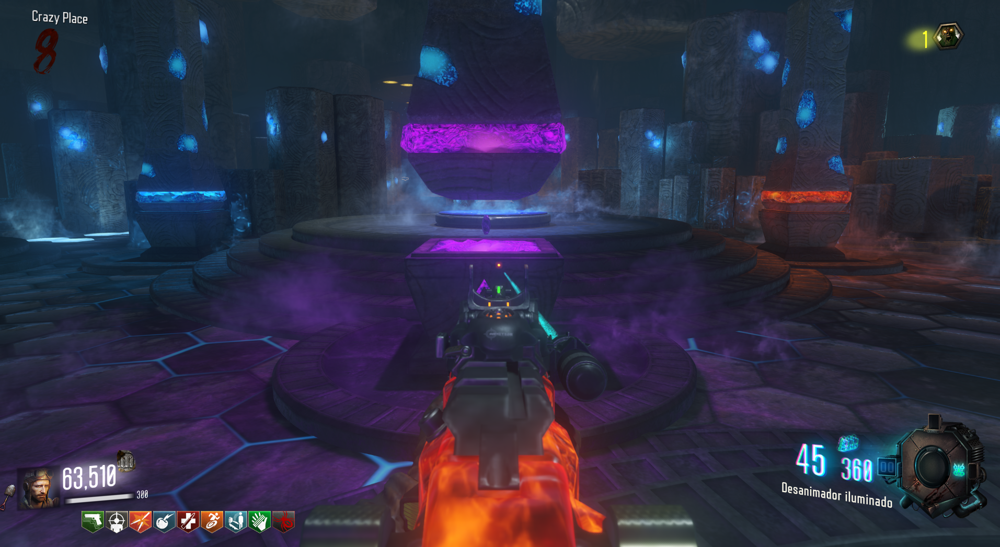
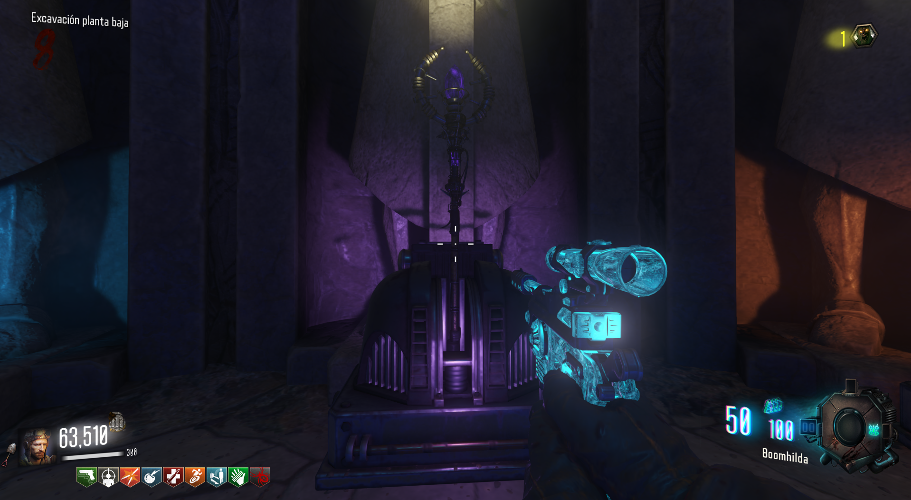

Para conseguir el bastón de rayos, debermos de subirnos en el tanque de la iglesia.

Mientras este se mueve, deberemos de saltar a algunos sitios para recolectar las tres piezas.
 Localizaciones:

1. Pasando el Generador 4, a la derecha.

2. En la zona de excavación, en el puente de la izquierda.

3. Casi llegando a la iglesia, en el camino de la derecha.
Cuando tengamos las tres piezas, iremos con el gramófono (se encuentra en la zona de excavación), a la mina de Rayos cerca del Generador 5.

Bajaremos por la mina y colocaremos el gramófono para que el portal aparezca.

Después iremos a nuestro pedestal correspondiente y obtendremos la piedra de rayos.

Finalmente iremos a la zona de excavación y construiremos el bastón.
